My Projects
Click on images for more details.
Click on images for more details.
ATS Life Sciences
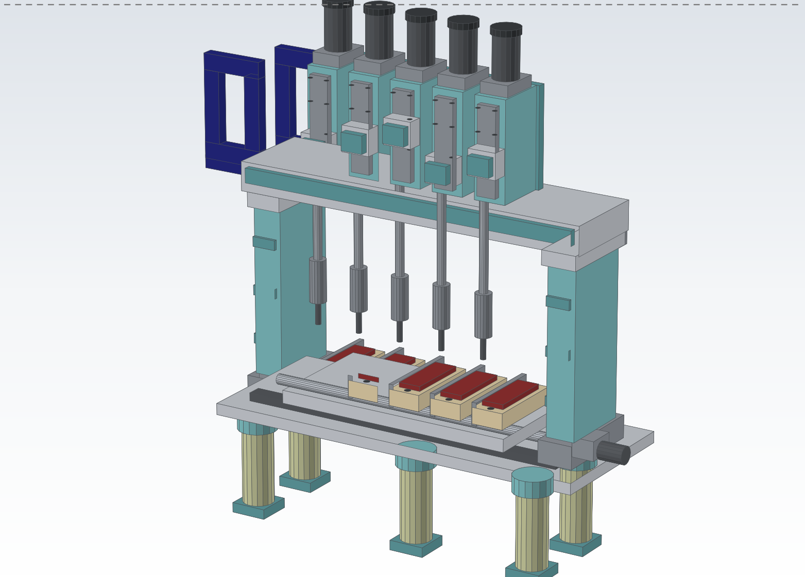
Designed a Pick & Place System for Syringes using pneumatic grippers and a servo motor system for actuation to transfer parts between conveyors.
Researched into old company projects and standard solutions from venders and optimized a vendor sold actuation system for pick and place. Optimized design for factors such as syringe material, conveyor speed, cycle time considerations etc.
During proof of principle testing, system was efficient and cut down cycle time estimates by 3% (~1.2 secs)
During my time at ATS Life Sciences, I was able to get exposure to the MedTech & pharmaceutical industry, and was exposed to high-tech and cost efficient manufacturing design processes.
- Designed pick and place systems, conveyors, guarding and noise proofing systems for medtech products in aseptic environments.
- Worked with cross functional teams across mechanical assembly, controls and vision to diagnose mechanical problems.
- Integrated sensors and vision systems into automated manufacturing processes.
Pan Labs
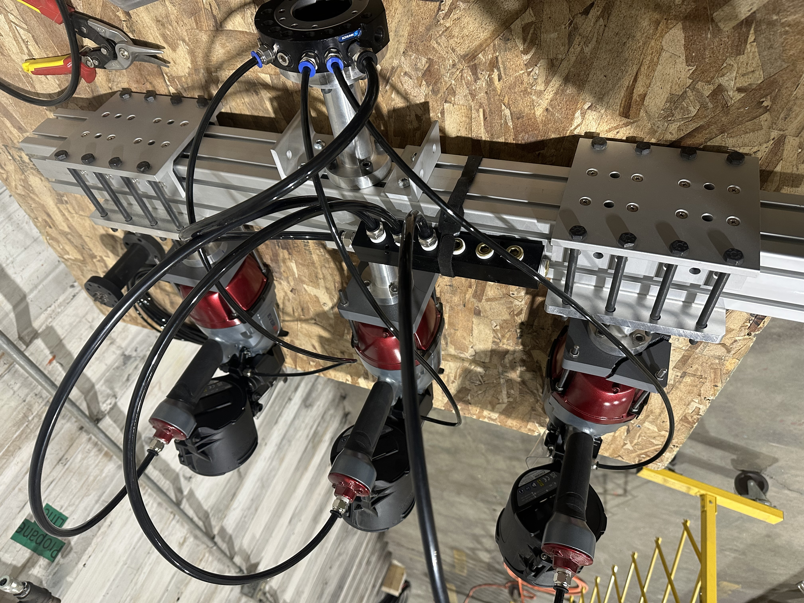
Created the mechanical and pneumatic design for a nailgun array for nailing OSB into wooden studs.
Researched existing robotic nailing solutions to create unique design retrofitted to current robotic pneumatic locking system. Designed pneumatic triggers for nailgun and manifold system to distribute pressure. Used CFD to verify pneumatics of design.
Nailed OSB to studs at a pace 56.7% faster than a human, with a depth accuracy of 76.7%.
My work at Robim Technologies involved me with exciting work in the Robotics industry specfically in the construction robotics startup space.
- Developed new cutting edge technologies to automate wood cutting and assembly for house fabrication.
- Integrated and researched machine learning & robotics tools to integrate with standard construction pratices.
- Designed digital circuit systems to control outputs through PLCs and microcontrollers
Robim Technologies
Created the mechanical and pneumatic design for a nailgun array for nailing OSB into wooden studs.
Researched existing robotic nailing solutions to create unique design retrofitted to current robotic pneumatic locking system. Designed pneumatic triggers for nailgun and manifold system to distribute pressure. Used CFD to verify pneumatics of design.
Nailed OSB to studs at a pace 56.7% faster than a human, with a depth accuracy of 76.7%.
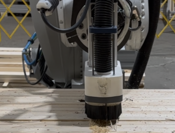
Designed a Dust Shoe Pneumatic Mechanism to vacuuum dust particles and
Reviewed existing designs and reworked them for our pneumatic mounting system. Improved suction and bit cooling by refining the air-path geometry. Built a pneumatic collection and cooling setup using a dust collector and air compressor.
Reduced spindle shavings from the bit by 78.2% and lowered the average final bit temperature by ~3 °C.
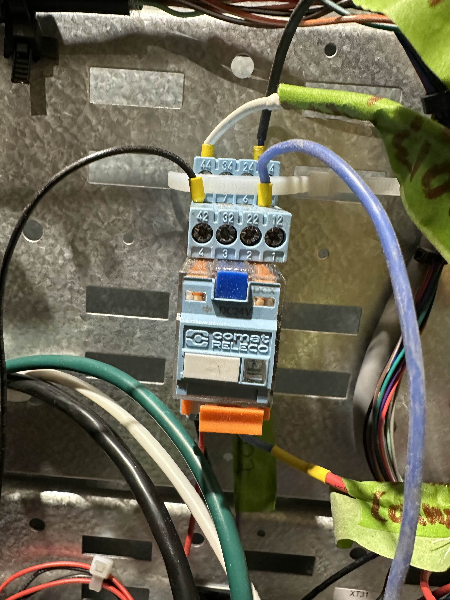
Designed a relay system using a self latching system to control relay using states.
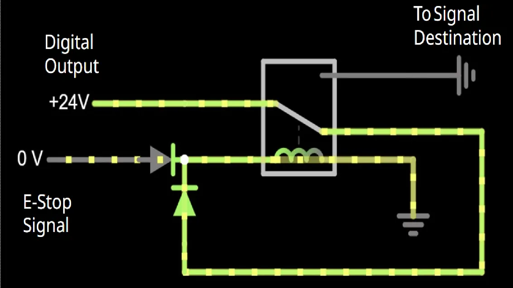
The relay system uses three states to prevent power from flowing through to output signals. Once E-Stop is pressed the latch will shift and disallow power to the outputs. Designed PCB for relay mounts and expandability for more outputs. Integrated PLC real-time monitoring using Structured Text programming.
Was effective for a temporary solution before permanent safety solution is put in place. Effectively stopped outputs.
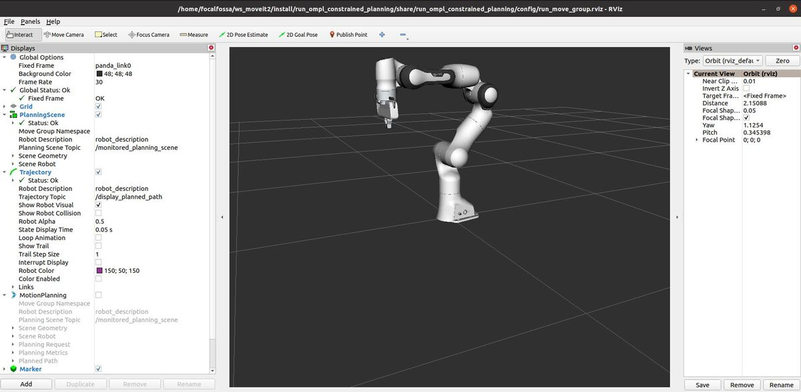
Programmed a robotic wood cutting workflow for automated panel fabrication.
Built toolpaths in ROS2 + MoveIt, validated reach and collisions in ABB RobotStudio, and tuned feeds, speeds, and approach angles for clean cuts. Automated path trajectories to avoid joint singularities and objects.
Achieved repeatable cut quality and reduced manual layout time by automating the cutting sequence.
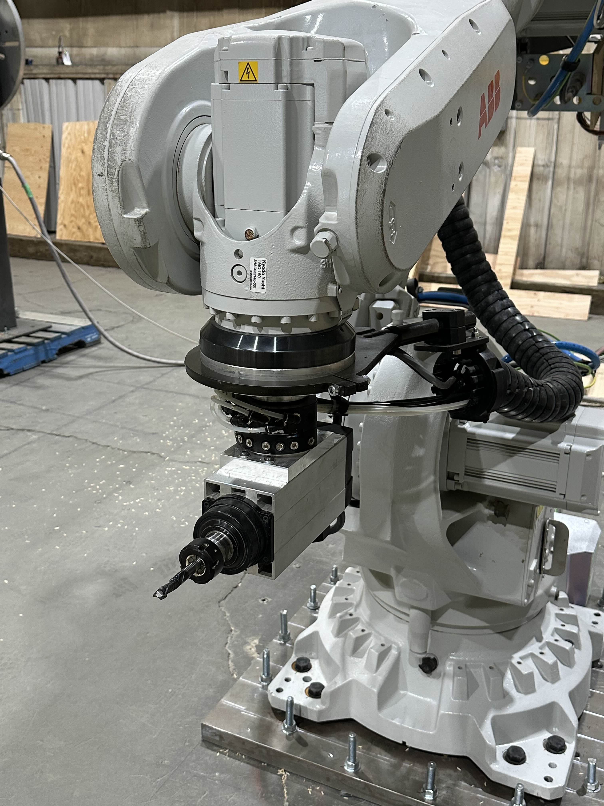
Developed a computer vision pipeline for ABB robotic manipulation with Gemini Robotics VLM and ROS 2.
Integrated RGB-D cameras, LiDAR, and stereo vision to prototype SLAM-based mapping, object localization, and collision-aware trajectory generation.
Validated end-effector automation workflows in simulation for repeatable, safe manipulation.
My work at Robim Technologies involved me with exciting work in the Robotics industry specfically in the construction robotics startup space.
- Developed new cutting edge technologies to automate wood cutting and assembly for house fabrication.
- Integrated and researched machine learning & robotics tools to integrate with standard construction pratices.
- Designed digital circuit systems to control outputs through PLCs and microcontrollers
Camcor Manufacturing

Designed a lever to disconnect the conveyor driveshaft and lift the pallet part with the mechanism.
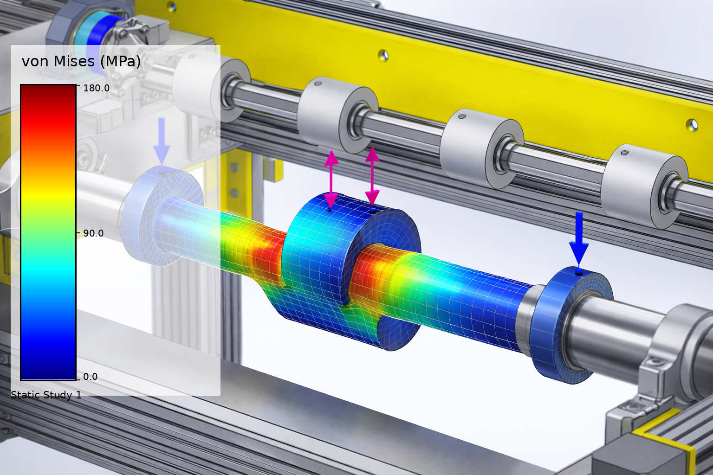
Used SolidWorks to model the mechanism and ran stress analysis to ensure durability. The lever arm was designed to provide mechanical advantage.
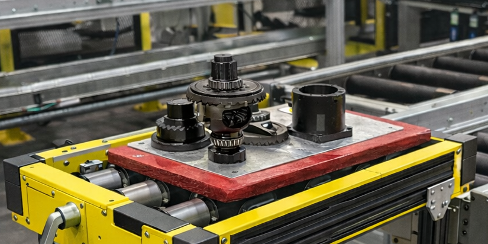
Successfully stopped the conveyor without damaging the belt or the parts. Reduced downtime by 15%.

Designed an induction heating table to hold an industrial grade laser welding machine to weld ring gears for a Power Transfer Unit.
Used McMaster-Carr parts and custom designed parts to be fabricated out of sheet metal, to hold the pinion ring gear assembly for weldment at the correct height.
.png)
Consistent heating profile achieved, resulting in stronger welds and fewer defects. In addition, optimized production worker efficiency by 36.7% by allowing for easier mounting without manually the part for weldment.
Designed a lever to disconnect the conveyor driveshaft and lift the pallet part with the mechanism.
Used SolidWorks to model the mechanism and ran stress analysis to ensure durability. The lever arm was designed to provide mechanical advantage.
Successfully stopped the conveyor without damaging the belt or the parts. Reduced downtime by 15%.
Designed an induction heating table to hold an industrial grade laser welding machine to weld ring gears for a Power Transfer Unit.
Used McMaster-Carr parts and custom designed parts to be fabricated out of sheet metal, to hold the pinion ring gear assembly for weldment at the correct height.
Consistent heating profile achieved, resulting in stronger welds and fewer defects. In addition, optimized production worker efficiency by 36.7% by allowing for easier mounting without manually the part for weldment.
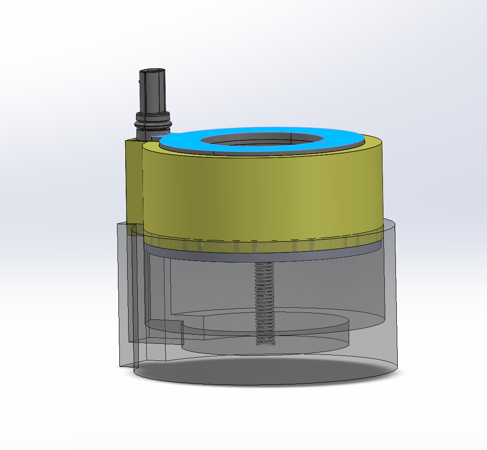
Mechanism that reduces human effort in soaking part in oil.
Created a "push to soak" mechanism with a spring that allowed for compact . Designed to be easily replaceable and avoid contact with electrical pins.
Eliminated electrical failures caused by oil contamination. Worker efficiency for task improved by 46.5%.
Mechanism that reduces human effort in soaking part in oil.
Created a "push to soak" mechanism with a spring that allowed for compact . Designed to be easily replaceable and avoid contact with electrical pins.
Eliminated electrical failures caused by oil contamination. Worker efficiency for task improved by 46.5%.
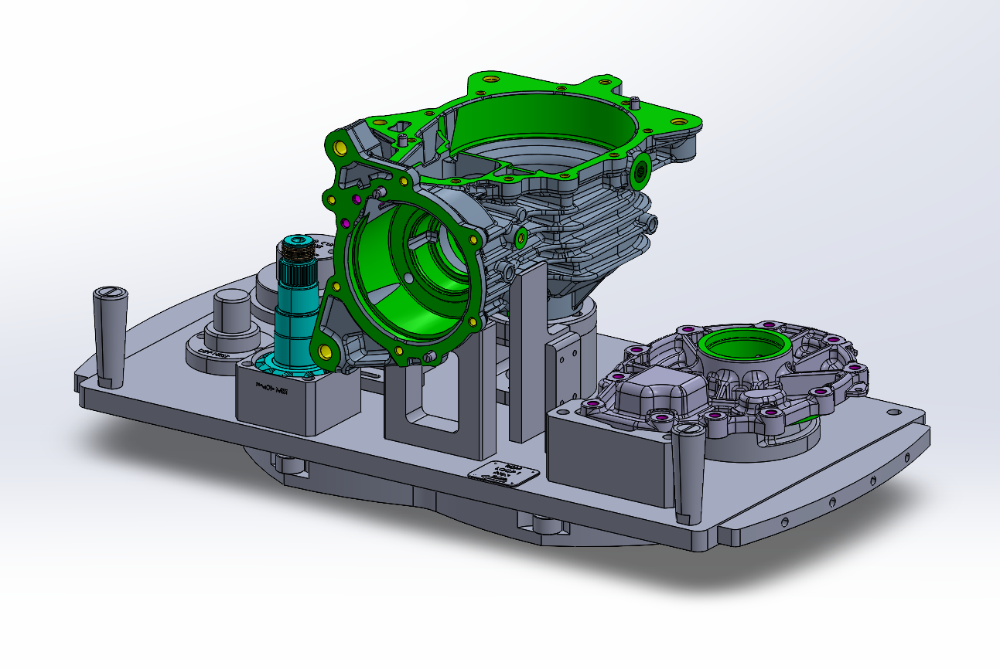


At Camcor Manufacturing I was part of a highly dedicated and motivated team to develop the launch of an assembly production line for a new differential.
At Camcor Manufacturing I was part of a highly dedicated and motivated team to develop the launch of an assembly production line for a new differential.
- Worked with process engineers and operators to develop easy to use and cheap fixtures for part assembly.
- Developed process and quality procedures with the engineering team to ensure industrial grade products.
- Designed simple PLC programs for checking operator's progression at substations
- Worked with process engineers and operators to develop easy to use and cheap fixtures for part assembly.
- Developed process and quality procedures with the engineering team to ensure industrial grade products.
- Designed simple PLC programs for checking operator's progression at substations
EV3 Robot
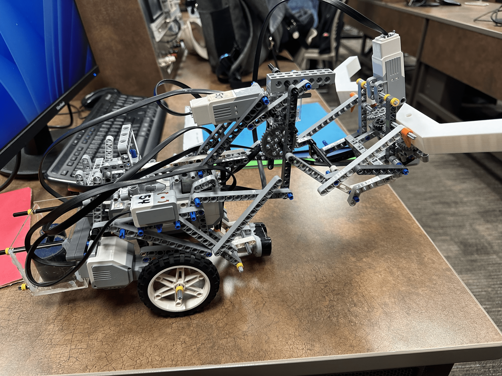
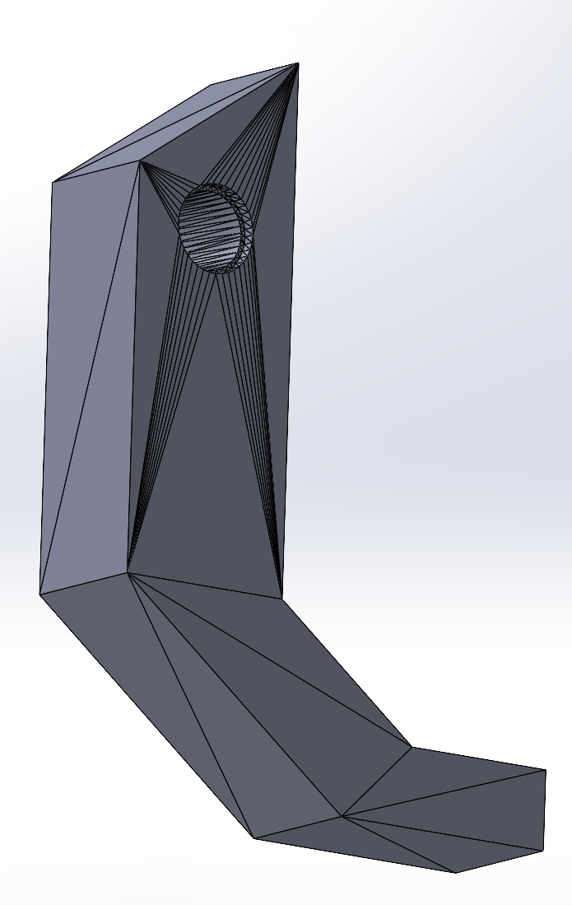
Built a Lego EV3 robot that moves red cups outside its ultrasonic sensor range.
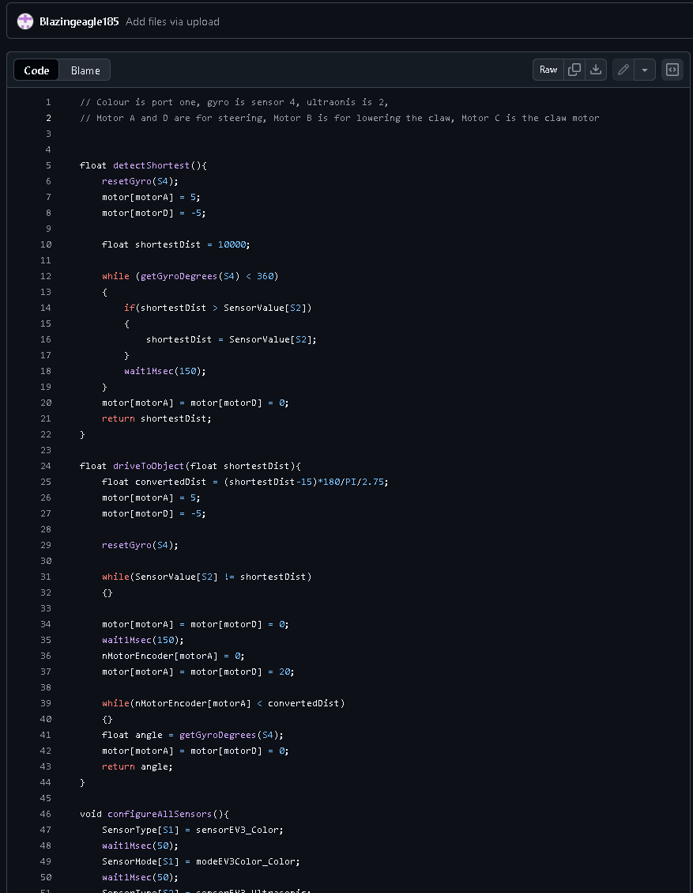
Uses an ultrasonic sensor to accumulate trash data and move in a circular pattern to pick up cups with a geartrain mechanism made out of Lego and 3D printed parts.
Successfully relocated cups beyond sensor range with consistent pick-and-place motion.
Built a Lego EV3 robot that moves red cups outside its ultrasonic sensor range.
Uses an ultrasonic sensor to accumulate trash data and move in a circular pattern to pick up cups with a geartrain mechanism made out of Lego and 3D printed parts.
Successfully relocated cups beyond sensor range with consistent pick-and-place motion.
Developed a Lego EV3 robot with Robot C programming that can move red cups outside the range of its ultrasonic sensor by picking them up. Using lowering mechanisms and 3D-printed claws to pick up the cups.
Developed a Lego EV3 robot with Robot C programming that can move red cups outside the range of its ultrasonic sensor by picking them up. Using lowering mechanisms and 3D-printed claws to pick up the cups.
Ardriverino
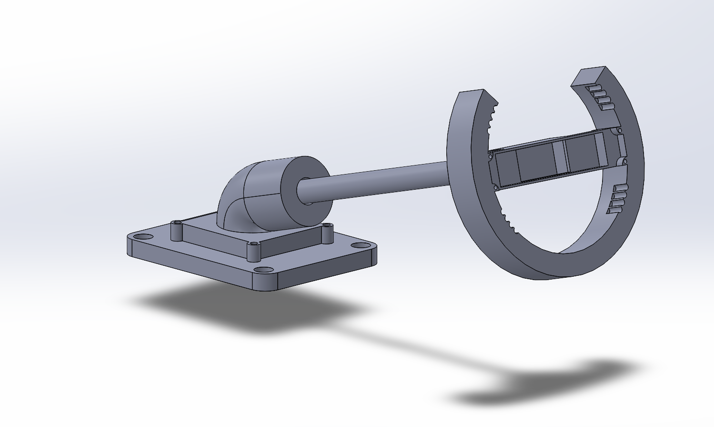
Built a low-cost steering wheel controller for PC driving games.
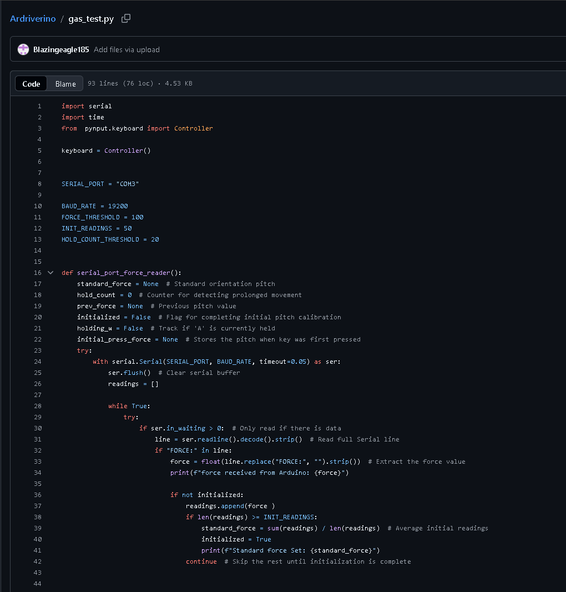
Used a Python serial listener to read pitch and force values from the Arduino, auto-calibrated a neutral baseline, then mapped tilt to A/D steering and force to W throttle with press/hold logic.
Achieved responsive, stable steering input without the cost of a commercial wheel.
Built a low-cost steering wheel controller for PC driving games.
Used a Python serial listener to read pitch and force values from the Arduino, auto-calibrated a neutral baseline, then mapped tilt to A/D steering and force to W throttle with press/hold logic.
Achieved responsive, stable steering input without the cost of a commercial wheel.
Created a cost-effective steering wheel for computers using an Arduino combined with a gyroscope and accelerometer to detect rotation and register different magnitudes of rotation to key presses.
Created a cost-effective steering wheel for computers using an Arduino combined with a gyroscope and accelerometer to detect rotation and register different magnitudes of rotation to key presses.
Romanoake

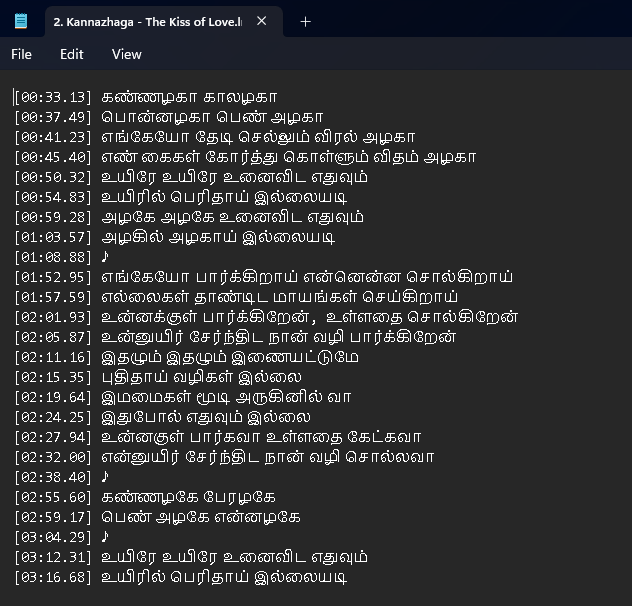
Built a full-stack karaoke app that romanizes multilingual lyrics and synchronizes them to Spotify playback.
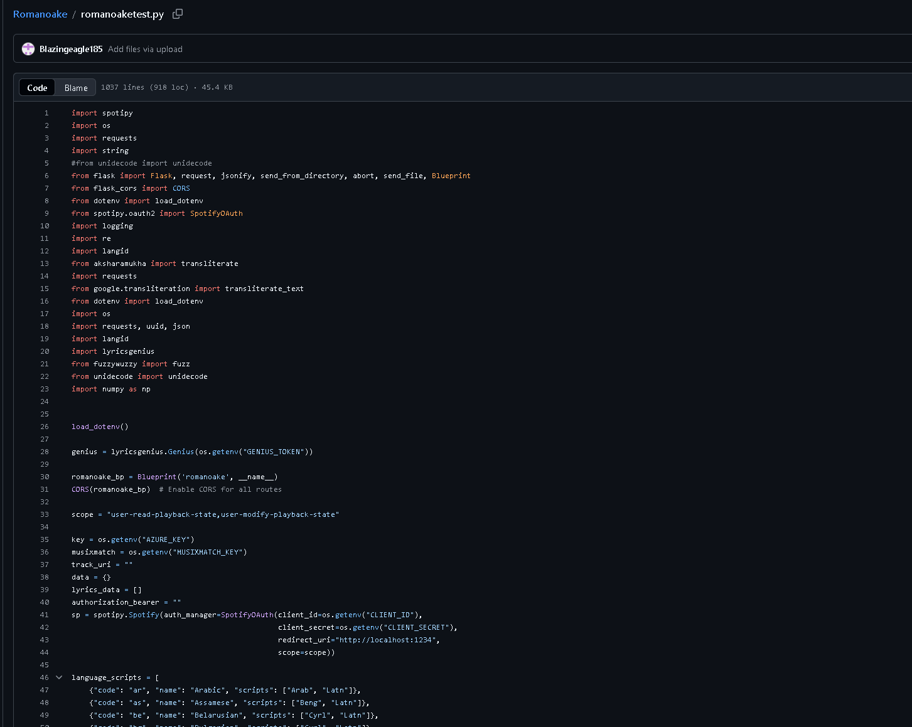
Orchestrated a Flask API that fetches lyrics from Genius/Musixmatch, aligns them with Spotify playback and analysis, and transliterates scripts using Azure Translator and Aksharamukha with language detection.
Delivered readable, time-aligned lyrics with reliable romanization for smoother sing-along sessions across languages.
Built a full-stack karaoke app that romanizes multilingual lyrics and synchronizes them to Spotify playback.
Orchestrated a Flask API that fetches lyrics from Genius/Musixmatch, aligns them with Spotify playback and analysis, and transliterates scripts using Azure Translator and Aksharamukha with language detection.
Delivered readable, time-aligned lyrics with reliable romanization for smoother sing-along sessions across languages.
Created a Web Karaoke app that romanizes foreign language lyrics (i.e 你好 → Nǐ hǎo) using Spotify API and Azure Speech Services to romanize text and play music through the Spotify app.
Created a Web Karaoke app that romanizes foreign language lyrics (i.e 你好 → Nǐ hǎo) using Spotify API and Azure Speech Services to romanize text and play music through the Spotify app.
RC Car (Work in Progress)
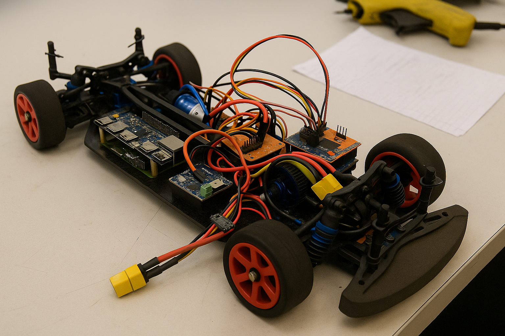
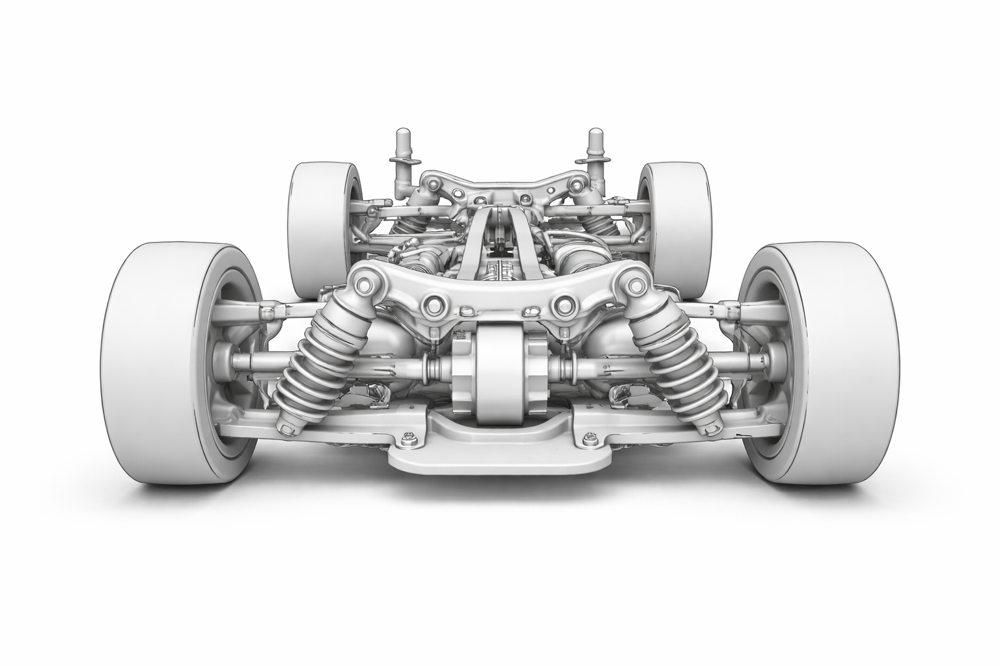
Built a prototype self-driving RC car with real-time perception and steering control.
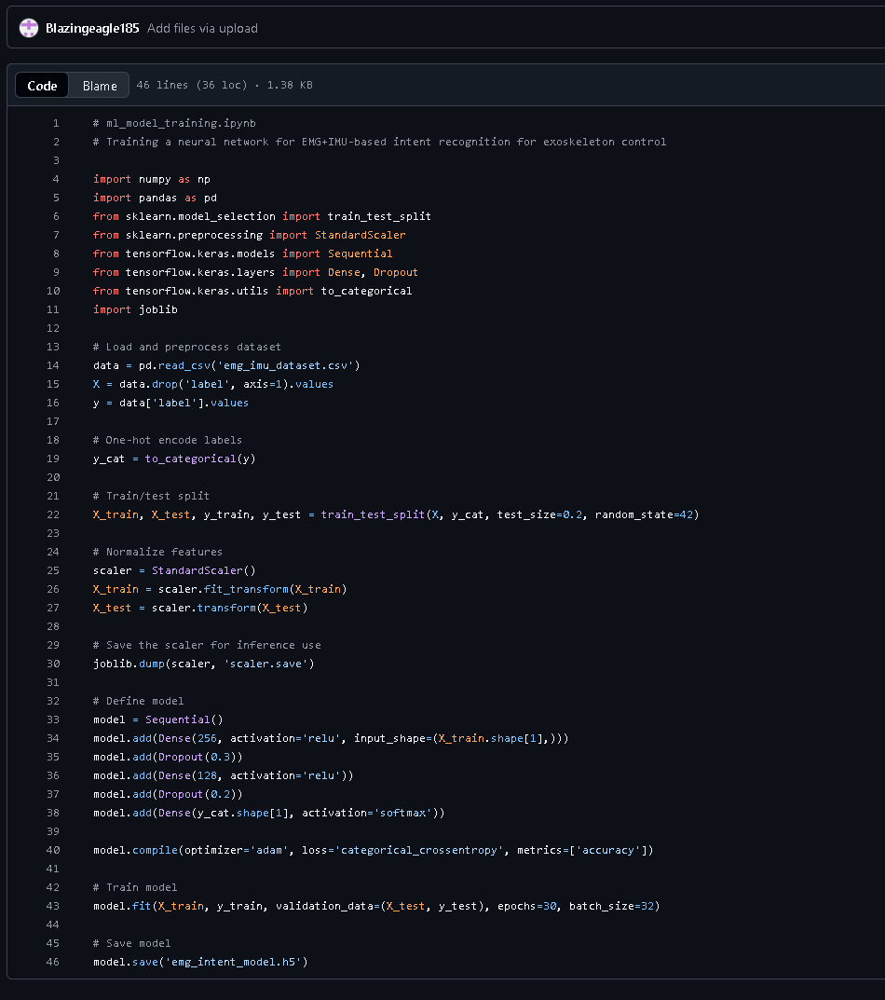
Captured frames on the Pi, normalized and resized inputs for a late-fusion PyTorch CNN, applied a confidence threshold with a rolling vote over recent frames, then output discrete left/right commands. The Pi sent serial commands to an Arduino that generated PWM for the steering servo and ESC, with rate limiting and a neutral fallback when confidence dropped.
Achieved consistent obstacle-avoidance turns with ~90% left/right accuracy and built a 3D-printed double-wishbone chassis with a spur-gear diff and rack-and-pinion steering. Currently working on suspension issues.
Created a prototype Self-Driving RC Car that uses machine learning algorithms to determine whether or not to turn. Uses a rack and pinion steering system with back-wheel drive.
Created a prototype Self-Driving RC Car that uses machine learning algorithms to determine whether or not to turn. Uses a rack and pinion steering system with back-wheel drive.
- Raspberry Pi controlled with motor controller
- 30 FPS camera for continuous software updates
- Machine learning for autonomous navigation
Contact Me
I'm always open to discussing new projects, creative ideas, or opportunities to be part of your vision.
I'm always open to discussing new projects, creative ideas, or opportunities to be part of your vision.